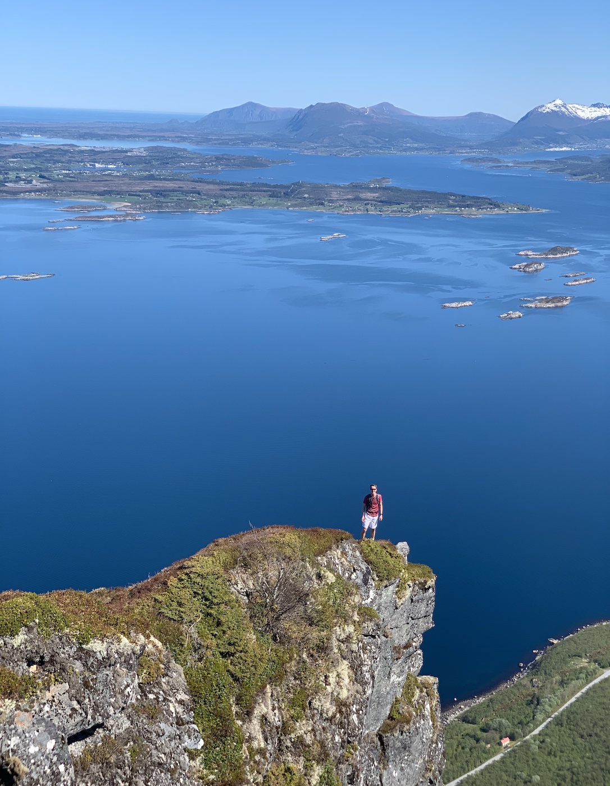
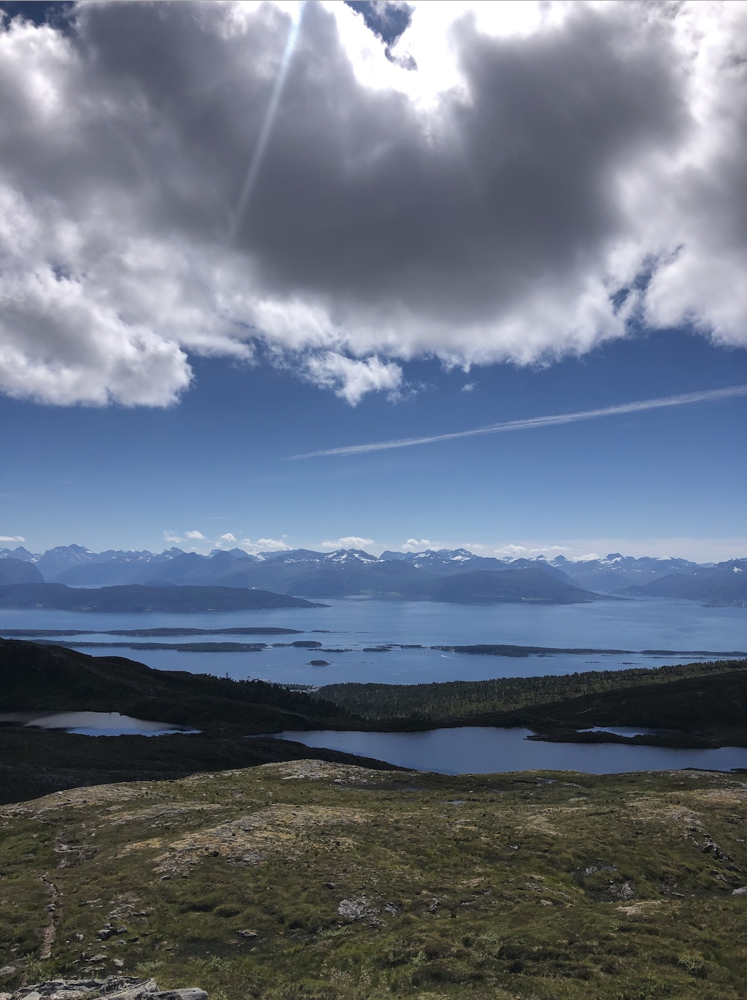

659 moh
Norges lengste steintrapp med sine 2212 trinn, og nydelig utsikt hele veien opp! Fra fergeleiet på Solholmen er det ca 5 minutt kjøring til parkeringsplassen ved foten av fjellet. Her er det rift om parkeringsplassene, så kom tidlig! Det er godt merket hele veien, så det er lett å finne toppen. Ca 2-3 timer - nydelig på en lørdag. Hvis du er tøff kan du avslutte med et bad i sjøen :)
633 moh
360-graders utsikt får du på toppen av Jendemsfjellet! Litt klyving og ganske bratt - men alt verdt det på toppen. Beregn ca tre timer fra parkeringsplassen på Jendem.
588 moh og 523 moh
Disse to turene kan du ta i en smack. Fra sentrum i Molde kjører du mot Varden (skiltet) Her kan du velge å parkere nede ved bommen og gå den lange kjedelige veien opp til turens foretrekne startpunkt til fots - eller du kan kjøre dit og spare deg noen tunge minutter på kjip grusvei. Fin grusvei opp mot skihytta, og deretter sti med litt klyving opp mot Audunstjønnan. Her kan man ta til venstre og velge Frænavarden som første stopp, og deretter fortsette til Tusenårsvarden, eller ta motsatt rute! Ca 1,5 - 2 timer fra start til slutt hvis man tar begge toppene

1086 moh
Tarløysa er den perfekte turen hvis du vil ha en relativt kort tur som gir spekatkulær utsikt. Her må man kjøre et lite stykke fra Molde. Ta ferga fra Sølsnes til Åfarnes og fortsett mot Nysetra for å parkere bilen. Det siste stykket er bratt og luftig, men fort over. Totalt ca 3 t 30 min gåing. Deilig tur!